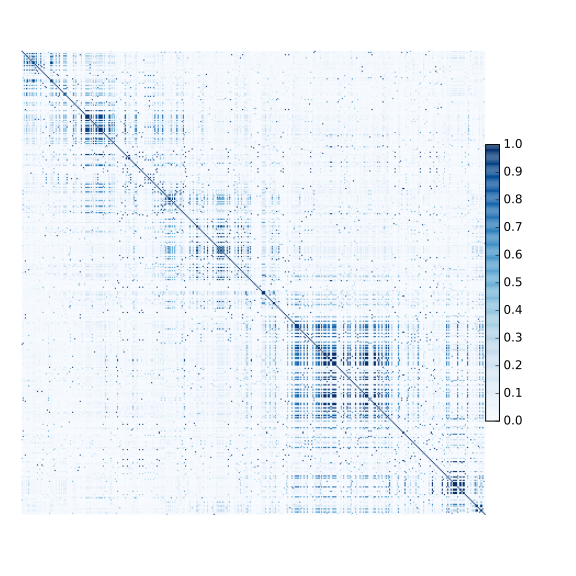
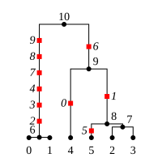
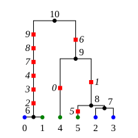

Tutorial¶
Note
Most tutorial material is now at http://tskit.dev/tutorials/intro.html.
Todo
The content is due to be moved into https://tskit.dev/tutorials/analysing_tree_sequences.html and made more coherent, at which time this page will be removed.
Calculating LD¶
The tskit API provides methods to efficiently calculate
population genetics statistics. For example, the LdCalculator
class allows us to compute pairwise linkage disequilibrium coefficients.
Here we use the LdCalculator.r2_matrix() method to easily make an
LD plot using matplotlib. (Thanks to
the excellent scikit-allel
for the basic plotting code
used here.)
import msprime
import tskit
import matplotlib.pyplot as pyplot
def ld_matrix_example():
ts = msprime.simulate(100, recombination_rate=10, mutation_rate=20, random_seed=1)
ld_calc = tskit.LdCalculator(ts)
A = ld_calc.r2_matrix()
# Now plot this matrix.
x = A.shape[0] / pyplot.rcParams["figure.dpi"]
x = max(x, pyplot.rcParams["figure.figsize"][0])
fig, ax = pyplot.subplots(figsize=(x, x))
fig.tight_layout(pad=0)
im = ax.imshow(A, interpolation="none", vmin=0, vmax=1, cmap="Blues")
ax.set_xticks([])
ax.set_yticks([])
for s in "top", "bottom", "left", "right":
ax.spines[s].set_visible(False)
pyplot.gcf().colorbar(im, shrink=0.5, pad=0)
pyplot.savefig("ld.svg")
{kind=link}

Working with threads¶
When performing large calculations it’s often useful to split the
work over multiple processes or threads. The tskit API can
be used without issues across multiple processes, and the Python
multiprocessing module often provides a very effective way to
work with many replicate simulations in parallel.
When we wish to work with a single very large dataset, however, threads can
offer better resource usage because of the shared memory space. The Python
threading library gives a very simple interface to lightweight CPU
threads and allows us to perform several CPU intensive tasks in parallel. The
tskit API is designed to allow multiple threads to work in parallel when
CPU intensive tasks are being undertaken.
Note
In the CPython implementation the Global Interpreter Lock ensures that
only one thread executes Python bytecode at one time. This means that
Python code does not parallelise well across threads, but avoids a large
number of nasty pitfalls associated with multiple threads updating
data structures in parallel. Native C extensions like numpy and tskit
release the GIL while expensive tasks are being performed, therefore
allowing these calculations to proceed in parallel.
In the following example we wish to find all mutations that are in approximate
LD (\(r^2 \geq 0.5\)) with a given set of mutations. We parallelise this
by splitting the input array between a number of threads, and use the
LdCalculator.r2_array() method to compute the \(r^2\) value
both up and downstream of each focal mutation, filter out those that
exceed our threshold, and store the results in a dictionary. We also
use the very cool tqdm module to give us a
progress bar on this computation.
import threading
import numpy as np
import tqdm
import msprime
import tskit
def find_ld_sites(
tree_sequence, focal_mutations, max_distance=1e6, r2_threshold=0.5, num_threads=8
):
results = {}
progress_bar = tqdm.tqdm(total=len(focal_mutations))
num_threads = min(num_threads, len(focal_mutations))
def thread_worker(thread_index):
ld_calc = tskit.LdCalculator(tree_sequence)
chunk_size = int(math.ceil(len(focal_mutations) / num_threads))
start = thread_index * chunk_size
for focal_mutation in focal_mutations[start : start + chunk_size]:
a = ld_calc.r2_array(
focal_mutation, max_distance=max_distance, direction=tskit.REVERSE
)
rev_indexes = focal_mutation - np.nonzero(a >= r2_threshold)[0] - 1
a = ld_calc.r2_array(
focal_mutation, max_distance=max_distance, direction=tskit.FORWARD
)
fwd_indexes = focal_mutation + np.nonzero(a >= r2_threshold)[0] + 1
indexes = np.concatenate((rev_indexes[::-1], fwd_indexes))
results[focal_mutation] = indexes
progress_bar.update()
threads = [
threading.Thread(target=thread_worker, args=(j,)) for j in range(num_threads)
]
for t in threads:
t.start()
for t in threads:
t.join()
progress_bar.close()
return results
def threads_example():
ts = msprime.simulate(
sample_size=1000,
Ne=1e4,
length=1e7,
recombination_rate=2e-8,
mutation_rate=2e-8,
)
counts = np.zeros(ts.num_sites)
for tree in ts.trees():
for site in tree.sites():
assert len(site.mutations) == 1
mutation = site.mutations[0]
counts[site.id] = tree.num_samples(mutation.node)
doubletons = np.nonzero(counts == 2)[0]
results = find_ld_sites(ts, doubletons, num_threads=8)
print("Found LD sites for", len(results), "doubleton sites out of", ts.num_sites)
In this example, we first simulate 1000 samples of 10 megabases and find all
doubleton mutations in the resulting tree sequence. We then call the
find_ld_sites() function to find all mutations that are within 1 megabase
of these doubletons and have an \(r^2\) statistic of greater than 0.5.
The find_ld_sites() function performs these calculations in parallel using
8 threads. The real work is done in the nested thread_worker() function,
which is called once by each thread. In the thread worker, we first allocate an
instance of the LdCalculator class. (It is critically important
that each thread has its own instance of LdCalculator, as the threads
will not work efficiently otherwise.) After this, each thread works out the
slice of the input array that it is responsible for, and then iterates over
each focal mutation in turn. After the \(r^2\) values have been calculated,
we then find the indexes of the mutations corresponding to values greater than
0.5 using numpy.nonzero(). Finally, the thread stores the resulting array
of mutation indexes in the results dictionary, and moves on to the next
focal mutation.
Running this example we get:
>>> threads_example()
100%|████████████████████████████████████████████████| 4045/4045 [00:09<00:00, 440.29it/s]
Found LD sites for 4045 doubleton mutations out of 60100
Computing statistics¶
Tskit provides an extensive and flexible interface for computing population genetic statistics, which is documented in detail in the general statistics section. This tutorial aims to give a quick overview of how the APIs work how to use them effectively.
First, lets simulate a tree sequence to work with which has roughly human parameters for 10 thousand samples and 10Mb chromosomes:
ts = msprime.simulate(
10**4, Ne=10**4, recombination_rate=1e-8, mutation_rate=1e-8, length=10**7,
random_seed=42)
We end up with 36K trees 39K segregating sites. We’d now like to compute some statistics on this dataset.
One-way statistics¶
We refer to statistics that are defined with respect to a single set of
samples as “one-way”. An example of such a statistic is diversity, which
is computed using the TreeSequence.diversity() method:
x = ts.diversity()
print("Average diversity per unit sequence length = {:.3G}".format(x))
[Output]
Average diversity per unit sequence length = 0.000401
This tells the average diversity across the whole sequence and returns a single
number. We’ll usually want to compute statistics in
windows along the genome and we
use the windows argument to do this:
windows = np.linspace(0, ts.sequence_length, num=5)
x = ts.diversity(windows=windows)
print(windows)
print(x)
[Output]
[ 0. 2500000. 5000000. 7500000. 10000000.]
[0.00041602 0.00039112 0.00041554 0.00038329]
The windows argument takes a numpy array specifying the breakpoints
along the genome. Here, we use numpy to create four equally spaced windows
of size 2.5 megabases (the windows array contains k + 1 elements to define
k windows). Because we have asked for values in windows, tskit now returns
a numpy array rather than a single value. (See
Output dimensions for a full description of how the output
dimensions of statistics are determined by the windows argument.)
Suppose we wanted to compute diversity within a specific subset of samples.
We can do this using the sample_sets argument:
A = ts.samples()[:100]
x = ts.diversity(sample_sets=A)
print(x)
[Output]
0.00040166573737371227
Here, we’ve computed the average diversity within the first hundred samples across the whole genome. As we’ve not specified any windows, this is again a single value.
We can also compute diversity in multiple sample sets at the same time by providing a list of sample sets as an argument:
A = ts.samples()[:100]
B = ts.samples()[100:200]
C = ts.samples()[200:300]
x = ts.diversity(sample_sets=[A, B, C])
print(x)
[Output]
[0.00040167 0.00040008 0.00040103]
Because we’ve computed multiple statistics concurrently, tskit returns a numpy array of these statistics. We have asked for diversity within three different sample sets, and tskit therefore returns an array with three values. (In general, the dimensions of the input determines the dimensions of the output: see Output dimensions for a detailed description of the rules.)
We can also compute multiple statistics in multiple windows:
x = ts.diversity(sample_sets=[A, B, C], windows=windows)
print("shape = ", x.shape)
print(x)
[Output]
shape = (4, 3)
[[0.0004139 0.00041567 0.00041774]
[0.00039148 0.00039152 0.00038997]
[0.00042019 0.00041039 0.00041475]
[0.0003811 0.00038274 0.00038166]]
We have computed diversity within three different sample sets across four genomic windows, and our output is therefore a 2D numpy array with four rows and three columns: each row contains the diversity values within A, B and C for a particular window.
Multi-way statistics¶
Many population genetic statistics compare multiple sets of samples to
each other. For example, the TreeSequence.divergence() method computes
the divergence between two subsets of samples:
A = ts.samples()[:100]
B = ts.samples()[:100]
x = ts.divergence([A, B])
print(x)
[Output]
0.00039764908000000676
The divergence between two sets of samples A and B is a single number, and we we again return a single floating point value as the result. We can also compute this in windows along the genome, as before:
x = ts.divergence([A, B], windows=windows)
print(x)
[Output]
[0.00040976 0.00038756 0.00041599 0.00037728]
Again, as we have defined four genomic windows along the sequence, the result is numpy array with four values.
A powerful feature of tskit’s stats API is that we can compute the divergences
between multiple sets of samples simultaneously using the indexes argument:
x = ts.divergence([A, B, C], indexes=[(0, 1), (0, 2)])
print(x)
[Output]
[0.00039765 0.00040181]
Here, we’ve specified three sample sets A, B and C and we’ve computed the
divergences between A and B, and between A and C. The indexes argument is used
to specify which pairs of sets we are interested in. In this example
we’ve computed two different divergence values and the output is therefore
a numpy array of length 2.
As before, we can combine computing multiple statistics in multiple windows to return a 2D numpy array:
windows = np.linspace(0, ts.sequence_length, num=5)
x = ts.divergence([A, B, C], indexes=[(0, 1), (0, 2)], windows=windows)
print(x)
[Output]
[[0.00040976 0.0004161 ]
[0.00038756 0.00039025]
[0.00041599 0.00041847]
[0.00037728 0.0003824 ]]
Each row again corresponds to a window, which contains the average divergence values between the chosen sets.
If the indexes parameter is 1D array, we interpret this as specifying
a single statistic and remove the empty outer dimension:
x = ts.divergence([A, B, C], indexes=(0, 1))
print(x)
[Output]
0.00039764908000000676
It’s important to note that we don’t have to remove empty dimensions: tskit will only do this if you explicitly ask it to. Here, for example, we can keep the output as an array with one value if we wish:
x = ts.divergence([A, B, C], indexes=[(0, 1)])
print(x)
[Output]
[0.00039765]
Please see Sample sets and indexes for a
full description of the sample_sets and indexes arguments.
Allele frequency spectra¶
The allele frequency spectrum is a fundamental tool in population genetics, and tskit provides a flexible and powerful approach to computing such spectra. Suppose we have simulated the following tree and site table:

id position ancestral_state metadata
0 0.30043643 0
1 0.32220794 0
2 0.36507027 0
3 0.50940255 0
4 0.51327137 0
5 0.51400861 0
6 0.54796110 0
7 0.75929404 0
8 0.80591800 0
9 0.92324208 0
Computing the allele frequency spectrum is then easy:
afs = ts.allele_frequency_spectrum(polarised=True, span_normalise=False)
which looks like:
[[0. 2. 6. 1. 1. 0. 0.]]
This tells us that we have two singletons, six doubletons and one 3-ton and
one 4-ton. Note
that the first element of the returned AFS array does not correspond to
the singletons (see below for why). Because we have simulated these mutations,
we know the ancestral and derived states we have set polarised to True. We
can get the “folded” AFS by setting polarised to False. Because we want simple
counts here and not averaged values, we set span_normalise=False: by
default, windowed statistics are divided by the sequence length, so they are
comparable between windows.
The returned value here is actually a 2D array, and this is because we can also perform these computations in windows along the genome:
afs = ts.allele_frequency_spectrum(
windows=[0, 0.5, 1], span_normalise=False, polarised=True)
print(afs)
giving:
[[0. 1. 1. 1. 0. 0. 0.]
[0. 1. 5. 0. 1. 0. 0.]]
This time, we’ve asked for the number of sites at each frequency in two equal windows. Now we can see that in the first half of the sequence we have three sites (compare with the site table above): one singleton, one doubleton and one tripleton.
Joint spectra¶
We can also compute allele frequencies within multiple sets of samples, the joint allele frequency spectra.

Here we’ve marked the samples as either blue or green (we can imagine these belonging to different populations, for example). We can then compute the joint AFS based on these two sets:
afs = ts.allele_frequency_spectrum([[0, 2, 3], [1, 4, 5]], polarised=True)
print(afs)
giving:
[[[0. 2. 0. 0.]
[0. 6. 0. 0.]
[0. 1. 1. 0.]
[0. 0. 0. 0.]]]
Now, each window in our AFS is a 2D numpy array, where each dimension corresponds to frequencies within the different sets. So, we see for example that there are six sites that are singletons in both sets, 1 site that is a doubleton in both sets, and 2 sites that singletons in [1, 4, 5] and not present in the other sample set.
Branch length spectra¶
Up to now we’ve used the TreeSequence.allele_frequency_spectrum() method
to summarise the number of sites that occur at different frequencies. We can also
use this approach to compute the total branch lengths subtending a given
number of samples by setting mode="branch":
afs = ts.allele_frequency_spectrum(
mode="branch", polarised=True, span_normalise=False)
print(afs)
giving:
[[0. 4.86089166 5.39638988 2.55239269 2.07444286 0. 0.]]
Thus, the total branch length over example one sample is 4.86, over two is 5.39, and so on.
Zeroth and final entries in the AFS¶
The zeroth element of the AFS is significant when we are working with sample sets that are a subset of all samples in the tree sequence. For example, in the following we compute the AFS within the sample set [0, 1, 2]:
afs = ts.allele_frequency_spectrum([[0, 1, 2]], mode="branch", polarised=True)
print(afs)
getting:
[[4.33184862 5.30022646 5.252042 0. ]]
Thus, the total branch length over 0, 1 and 2 is 5.3, and over pairs from this set is 5.25. What does the zeroth value of 4.33 signify? This is the total branch length over all samples that are not in this sample set. By including this value, we maintain the property that for each tree, the sum of the AFS for any sample set is always equal to the total branch length. For example, here we compute:
print("sum afs = ", np.sum(afs))
print("total branch len = ", tree.total_branch_length)
getting:
sum afs = 14.884117086717392
total branch len = 14.884117086717396
The final entry of the AFS is similar: it counts alleles (for mode=”site”) or branches (for mode=”branch”) that are ancestral to all of the given sample set, but are still polymorphic in the entire set of samples of the tree sequence. Note, however, that alleles fixed among all the samples, e.g., ones above the root of the tree, will not be included.